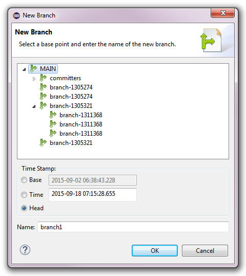
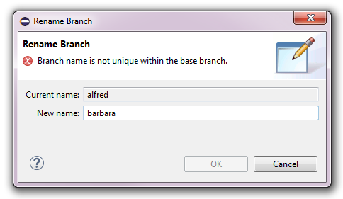

Working with Branches


Working with Branches |
|
Branches are a very powerful concept in CDO. They allow to isolate a sequence of commits from other
sequences of commits, as well as all the locks on the objects that are involved. A branch is represented by a
base point and a name. The base point of a branch X is the
timestamp in the parent branch where the
branch X forks off. As such all branches of a repository form a tree that is rooted at the
main branch, which itself has no proper base point (the base branch is
null and the base time is identical to the creation time of the repository).
The branch tree of a repository is displayed under that repository in the CDO Repositories View. The main branch is always represented by the repository node itself. The displayed branch tree is updated in real-time even when other users create new branches or modify existing branches on their workstations.
Each repository has at least a main branch, but, to be able to work with branches in a meaningful way, the versioning mode of a repository must be set to branching. See Property supportingBranches for instructions on how to do this for remote repositories or Creating Local Repositories for instructions on how to do this for local repositories.
Note that the branching mode does usually not add much overhead in terms of storage consumption or processing time, but the branching mode always includes the functionality and the characteristics of the auditing mode; and that mode may significantly increase the size of the underlying database. In other words, using the auditing mode instead of the normal mode makes a big difference; using the branching mode instead of the auditing mode not.
Table of Contents
| 1 | Creating Branches | ||
| 2 | Renaming Branches | ||
| 3 | Deleting Branches | ||
| 4 | Showing Branches in the History View | ||
There exist several ways to create new branches. The most explicit way is to use CDO Repositories View, select a repository (with versioning mode set to branching) or an existing branch under that repository, open the context menu on that repository or branch and select the New Branch action. The following dialog will pop up:

The upper part of the dialog shows the current branch tree of the targeted repository. The base branch of the new branch can be changed if needed.
The base time stamp must be specified. Three different options exist:
head of a branch is a floating branch point,
i.e., it always point to the current time in a branch. Nevertheless selecting this option will set the base time stamp of the
new branch to the fixed point in time on the server when the branch is actually created.
The name of the new branch must be unique among the child branches of the selected base branch.
Other ways to create branches are explained in Switching to a New Branch and History Integration.
Existing branches can be renamed at any point in time. The main branch of a repository can not be renamed.
To rename a branch select it in the CDO Repositories View, press the F2 key or open the context menu on that branch and select the Rename action. The following dialog will pop up:

The entered new name for the selected branch is validated to be unique among the other child branches of the selected branch's base branch.
Deleting branches is not yet supported.
All branches can be shown in the History view:

This is particularly useful if the "Link with Editor and Selection" button in the toolbar of the History view is not enabled and the history page does not automatically adjust to the workbench selection.